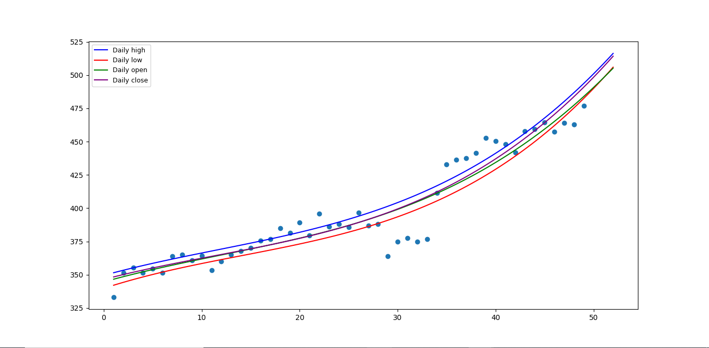

Machine Learning
Stock Prediction
Stock Prediction
The Stock Market is a total mess. There are so many factors that decide whether the price of a company’s stock will increase or decrease during a specific time period, which is why there is no exact way to predict what will happen to the stock price of a specific company. Although no level of Machine Learning can predict the future geopolitical and socio economic events that can affect a stock’s price, we can use mathematics to create accurate models and predict stock prices in the very near future, maybe a day or 2 ahead.
Welcome to Meta AI. Meta AI is a website that stores a database of various companies and their future predicted stock prices. Using python and ML libraries, I have coded and tuned an accurate regression model that can predict the strength of increases and decreases in stock prices over short periods of time like a day or a week. Even though regression models cannot exactly predict the price of a stock, they can accurately predict whether a stock will increase or decrease, which is exactly what Meta AI is forMeta AI can be used to support investors with mathematical evidence that can reliably prove short outcomes of stocks.
